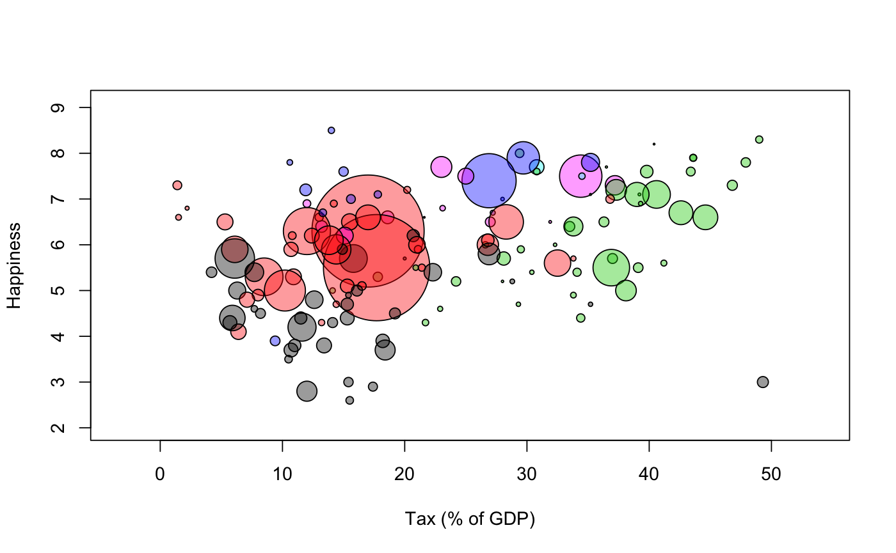

Dataset on subjective happiness, tax rates, population sizes, continent, and major religion for 148 countries
A data frame with 148 observations on the following 6 variables.
a factor with 148 levels that contain the country names
a numeric vector with the average subject happiness score (on a scale from 0-10)
a numeric vector showing the tax revenue as percentage of GDP
a factor with levels Buddhist
Christian Hindu Muslim None or Other
a factor with levels AF, AS,
EU, NA, OC, SA, corresponding to the continents
Africa, Asia, Europe, North America, Ocenaia, South American, respectively
a numeric vector showing the population (in millions)
Data collected by Ellen Ekstroem. Population sizes are from Wikipedia per August 2nd, 2012 http://en.wikipedia.org/wiki/List_of_countries_by_population Major religions are from Wikipedia per August 2nd, 2012 http://en.wikipedia.org/wiki/Religions_by_country Tax rates are from Wikipedia per August 2nd, 2012 http://en.wikipedia.org/wiki/List_of_countries_by_tax_revenue_as_percentage_of_GDP Average happiness scores are from "Veenhoven, R. Average happiness in 148 nations 2000-2009, World Database of Happiness, Erasmus University Rotterdam, The Netherlands". Assessed on August 2nd, 2012 at: http://worlddatabaseofhappiness.eur.nl/hap_nat/findingreports/RankReport_AverageHappiness.php
data(happiness) with(happiness, symbols(tax, happy, circles=sqrt(population)/8, inches=FALSE, bg=continent))# # Make a prettier image with transparent colors # newcols <- rgb(t(col2rgb(palette())), alpha=100, maxColorValue=255) with(happiness, symbols(tax, happy, circles=sqrt(population)/8, inches=FALSE, bg=newcols[continent], xlab="Tax (% of GDP)", ylab="Happiness"))# # Simple analysis # res <- lm(happy ~ religion + population + tax:continent, data=happiness) summary(res)#> #> Call: #> lm(formula = happy ~ religion + population + tax:continent, data = happiness) #> #> Residuals: #> Min 1Q Median 3Q Max #> -1.96338 -0.67564 -0.05445 0.59088 2.26032 #> #> Coefficients: #> Estimate Std. Error t value Pr(>|t|) #> (Intercept) 5.5427302 0.3739363 14.823 < 2e-16 *** #> religionChristian -0.8019944 0.4014948 -1.998 0.04786 * #> religionHindu -0.8993147 0.8097789 -1.111 0.26880 #> religionMuslim -0.3065812 0.3611458 -0.849 0.39749 #> religionNone -0.7014654 0.4929272 -1.423 0.15711 #> religionOther -1.3999987 0.6335210 -2.210 0.02886 * #> population 0.0003362 0.0005979 0.562 0.57484 #> tax:continentAF -0.0210612 0.0137894 -1.527 0.12911 #> tax:continentAS 0.0383673 0.0140178 2.737 0.00707 ** #> tax:continentEU 0.0470980 0.0081429 5.784 5.16e-08 *** #> tax:continentNA 0.1069641 0.0164712 6.494 1.62e-09 *** #> tax:continentOC 0.0869860 0.0218046 3.989 0.00011 *** #> tax:continentSA 0.0831271 0.0148874 5.584 1.32e-07 *** #> --- #> Signif. codes: 0 ‘***’ 0.001 ‘**’ 0.01 ‘*’ 0.05 ‘.’ 0.1 ‘ ’ 1 #> #> Residual standard error: 0.9362 on 130 degrees of freedom #> (5 observations deleted due to missingness) #> Multiple R-squared: 0.5331, Adjusted R-squared: 0.49 #> F-statistic: 12.37 on 12 and 130 DF, p-value: < 2.2e-16 #>